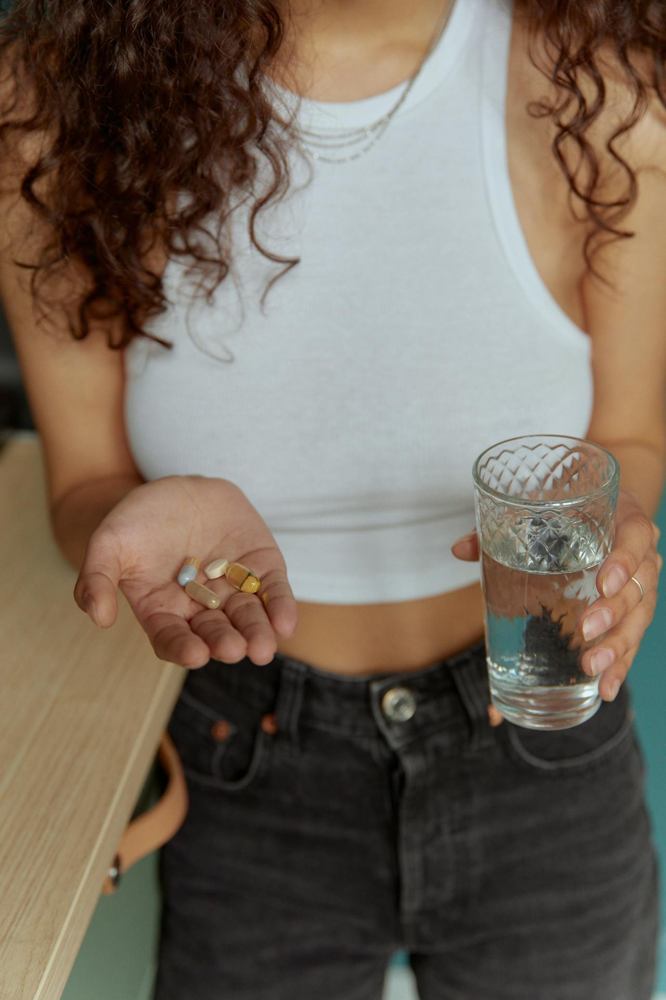

Is Clindamycin Good for Acne?

Hadiyah Daché, licensed cosmetologist & esthetician
Acne
4 min
← All articlesThe Book →Friendly reminder: this post contains affiliate links, which help support the Glowdega Archive. If you buy through them, I may earn a commission at no extra cost to you.
Similar to doxycycline, if you’ve visited a dermatologist for your acne recently you probably were quickly prescribed topical Clindamycin (or the infamous Benzoyl Peroxide-Clindamycin mix). Clindamycin belongs to a remarkable family of antibiotics called lincosamides, first discovered in a handful of soil from Lincoln, Nebraska in 1962. This chance discovery led to the isolation of lincomycin from the soil-dwelling bacteria Streptomyces lincolnensis before being modified to create clindamycin, making it more effective and better absorbed by the body.
Lincosamides could be considered molecular precision tools that only target bacteria while leaving human cells untouched. Specifically, they interfere with bacteria’s ability to make proteins—the building blocks they need to survive. While these antibiotics are used to treat serious infections throughout the body, dermatologists found that applying clindamycin directly to the skin could effectively target acne-causing bacteria without exposing the entire body to antibiotics.
Since its FDA approval in the 1980s, clindamycin has become a cornerstone in topical acne treatment. Its journey from “dirty” microbe to medicine cabinet illustrates the fascinating intersection of natural discovery and scientific innovation in modern skincare.
How Does Clindamycin Work?
What makes Clindamycin particularly fascinating in the world of acne treatment is its dual approach to fighting breakouts. Unlike simple antiseptics that just kill bacteria on contact, Clindamycin works by deploying multiple tactics simultaneously to combat acne.
At its core, Clindamycin is an expert at disabling bacteria from within. It slips through bacterial cell walls and targets their protein-making factories (called ribosomes), effectively shutting down their ability to produce essential proteins. Without new proteins, the bacteria can't survive. But what truly sets Clindamycin apart from other topical treatments is its sophisticated approach to inflammation.
While many acne treatments focus solely on killing bacteria or exfoliating pores, Clindamycin goes further by actively calming the skin's inflammatory response. It's mechanism of action is essentially two-fold: it battles the bacteria while simultaneously preventing your skin from overreacting to the infection. This anti-inflammatory action helps reduce the redness, swelling, and discomfort that make acne so distressing.
Clindamycin reduces the production of inflammatory signals, stops inflammatory cells from rushing to the area (a process called chemotaxis), and even helps break down existing inflammatory compounds. This multi-layered approach explains why Clindamycin can effectively treat active breakouts while also preventing new ones from forming.
Effective… Kinda
When you begin Clindamycin treatment, you’ll typically start seeing improvements around the 4-6 week mark. The most dramatic results appearing after 12 weeks of consistent use. Here’s the thing: when using Clindamycin alone, it only kinda works. Clinical studies have shown it to be most effective in combination therapies.
The most successful partnership is between Clindamycin and benzoyl peroxide. This dynamic duo not only works better together than either treatment alone, but also helps prevent one of the biggest challenges in acne treatment: bacterial resistance. However, this brings us to an important reality of treating acne—the question of recurrence.
Acne can be stubborn, and even after successful treatment, it may return. This is especially true if Clindamycin is used alone and then discontinued abruptly. This is why dermatologists often recommend a transition plan, gradually shifting from Clindamycin to maintenance treatments that can help prevent future breakouts.
The Clindamycin Challenge
The challenge with extended Clindamycin use stems from the fundamental nature of antibiotic resistance (just like with doxycycline). When bacteria are repeatedly exposed to antibiotics, they can develop defense mechanisms, making the treatment progressively less effective. This adaptation occurs through natural selection – bacteria with resistant genes survive and multiply, while susceptible bacteria die off. Research has shown that C. acnes, the primary bacteria involved in acne, can develop resistance to Clindamycin.
Additionally, prolonged antibiotic use can disrupt the skin's natural microbiome balance. Our skin hosts diverse beneficial bacteria that help maintain barrier function and regulate inflammation. Continuous antibiotic application may eliminate these helpful organisms alongside harmful ones, potentially leading to other skin issues or making acne treatment more challenging long-term.
The Best Skincare to use With Clindamycin
The key to successful acne treatment lies in building a comprehensive skincare routine that works synergistically with or after Clindamycin treatment. Several evidence-based ingredients deserve consideration:
Mandelic acid is particularly valuable for acne-prone skin due to its larger molecular size compared to other AHAs, making it gentler while still effective. Its antibacterial properties complement post-clindamycin care, and studies indicate it has lower irritation potential than glycolic acid while still providing effective exfoliation. It's particularly suitable for skin of color due to lower risk of post-inflammatory hyperpigmentation. Our clients use Majestic No. 8 when transitioning from Clindamycin use to help keep their breakouts at bay.
Beta glucan deserves attention for its healing and barrier-strengthening properties. It enhances skin recovery, which is crucial after antibiotic treatment, and research shows it has anti-inflammatory effects. It's especially beneficial when transitioning off antibiotics as it helps support the skin's natural immune function. It’s the star ingredient of our Barrier Brew serum for this reason!
Azelaic acid represents another powerful option, particularly valuable for its dual anti-inflammatory and mild antimicrobial properties. Studies demonstrate that 15-20% azelaic acid preparations can effectively maintain the improvements achieved with antibiotic treatment while presenting minimal risk of bacterial resistance.
For those using Clindamycin alongside other treatments, incorporating a gentle, non-comedogenic moisturizer becomes crucial and Glow Mojo does the job well! The evidence shows that maintaining proper hydration actually helps control acne by preventing compensatory oil production.